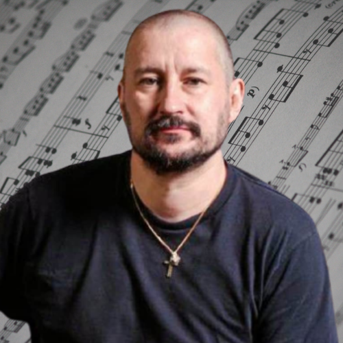

INSTRUMENTISTIC
The true expression of sound
The true expression of sound
At Instrumentistic, we are dedicated to providing vistors with the best informative and enlightening information on film music composers of the 21st century. The list of composers is arranged in alphabet order.
|  | Clint MansellBiography: Clinton Darryl Mansell is a composer and musician who began his musical journey in his hometown – Stourbridge, England.Awards: One Best Original Score of the Decade, One BMI Film Music Award, One Best Orchestral Score. . Most notable work: Black Swan, Sahara, Requiem for a Dream, The Fountain Current Tour:None to current date |
 |
Hans ZimmerBiography: Hans Zimmer has provided musical scores for more than 80 films over a 20 years timespan. Orginally named, Hans Florian Zimmer born on September 12, 1957, in Frankfurt, Germany. Hans developed a love for music began at a young age Awards: Hans Zimmer has obtain plently of awards as a composer including three Golden Globes, three Grammys, a Tony and an American Music Award. Most notable work:The Dark Knight Franchise, Dune, Interstellar, Inception, The Lion King, Pirates of the Caribbean, Kung Fu Panda. Current Tour: Hans Zimmer Live (2022) |
 |
John WillamsBiography:John Towner Williams is an composer, conductor, and pianist. John career has spanned over seven decades, in which he has composed some of the most popular, recognizable, and critically acclaimed film scores in cinematic history Awards: Five Oscars, four Golden Globes, seven BAFTAs and 25 Grammys Most notable work::Five Oscars, four Golden Globes, seven BAFTAs and 25 Grammys Current Tour: The Music of John Williams (2022/2023) |
 |
Michael GiacchinoBiography:Michael Giacchino is an American composer of music for films, television and video games. He has also served as a director for film and television. He has received many awards throughout the years.Awards: One Oscar, one Emmy, and three Grammys. Most notable work: The Batman, Up, Spider-Man: No Way Home,War Of The Planet Of The Apes, Jojo Rabbit, Inside Out and Lightyear Current Tour:None to current date |
Marvel Suite at Royal Albert Hall London 2017
Time, Live in Prague 2020
The Fountain live at Film Music Prague 2018